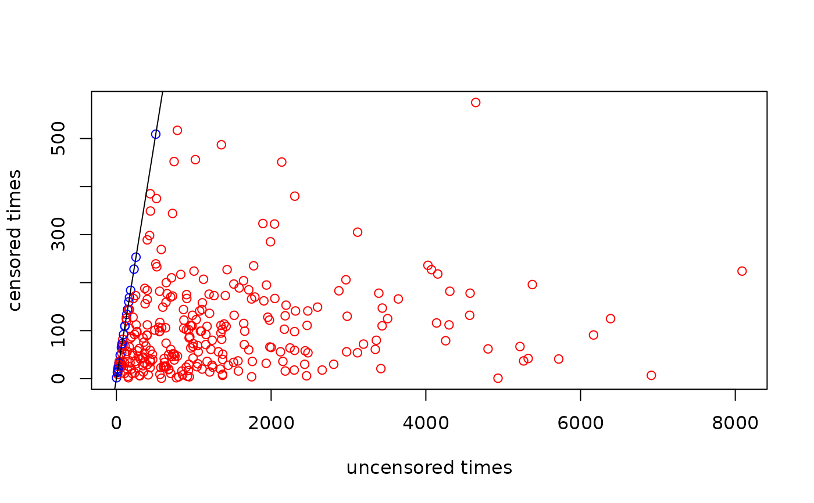

Apply Random Exponentially Distributed Censoring
Source:R/censoring_random.R
random_censoring_exp.RdApply Random Exponentially Distributed Censoring
Value
Returns a Function with one argument dat that modifies a dataset generated
by the generate functions by censoring the times and setting the event
indicator to FALSE for censored observations.
Examples
one_simulation <- merge(
assumptions_delayed_effect(),
design_fixed_followup(),
by=NULL
) |>
head(1) |>
generate_delayed_effect()
# apply censoring to dataset
censored_sim <- random_censoring_exp(one_simulation, 0.01)
# plot
# uncensored (blue) observations are the same for original and modified
# dataset
# censored (red) observations are smaller than the uncensored ones
plot(
one_simulation$t,
censored_sim$t,
col=ifelse(censored_sim$evt, "blue", "red"),
xlab = "uncensored times",
ylab = "censored times"
)
abline(0,1)
